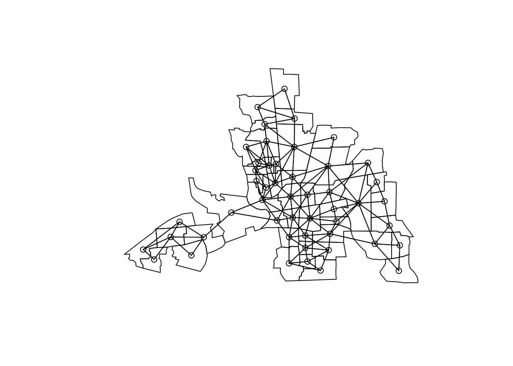
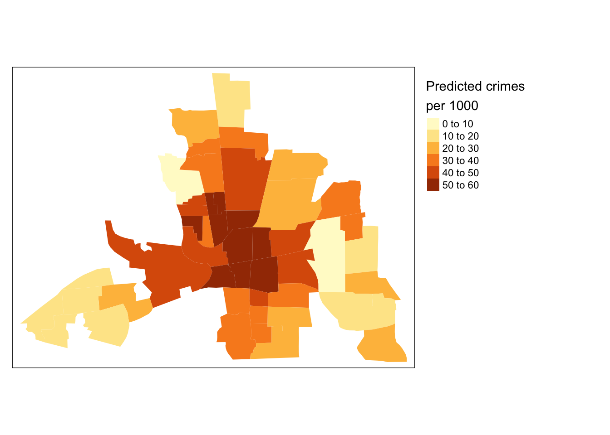

Thursday, October 13, 2022
Today
Linear regression
Linear regression provides another way to implement a \(t\) test on the difference in means, but it can be used for a wide range of inference problems. Here you learn how to fit a regression model, make predictions, interpret the output, and quantify the uncertainty about the model (coefficients) and about predictions made from the model.
- A \(t\) test by another name
- Motivation for the regression model
- Making prediction with the regression model
- Uncertainty about the regression model coefficients
- Bootstrapping model uncertainty
Linear regression: A t test by another name
Recall that a \(t\) test quantifies the evidence about whether population means from two groups are statistically different. Regression extends this test to an arbitrary number of groups.
Consider again the mtcars data frame.
head(mtcars)## mpg cyl disp hp drat wt qsec vs am gear carb
## Mazda RX4 21.0 6 160 110 3.90 2.620 16.46 0 1 4 4
## Mazda RX4 Wag 21.0 6 160 110 3.90 2.875 17.02 0 1 4 4
## Datsun 710 22.8 4 108 93 3.85 2.320 18.61 1 1 4 1
## Hornet 4 Drive 21.4 6 258 110 3.08 3.215 19.44 1 0 3 1
## Hornet Sportabout 18.7 8 360 175 3.15 3.440 17.02 0 0 3 2
## Valiant 18.1 6 225 105 2.76 3.460 20.22 1 0 3 1You test the null hypothesis that there is no difference in average miles per gallon (mpg variable) between cars with and without automatic transmission (am variable). If you assume the variance in the gas mileage is the same for both groups (recall the box plots will look similar) then you implement the test as follows.
t.test(mpg ~ am,
data = mtcars,
var.equal = TRUE)##
## Two Sample t-test
##
## data: mpg by am
## t = -4.1061, df = 30, p-value = 0.000285
## alternative hypothesis: true difference in means between group 0 and group 1 is not equal to 0
## 95 percent confidence interval:
## -10.84837 -3.64151
## sample estimates:
## mean in group 0 mean in group 1
## 17.14737 24.39231The \(t\) value, computed as the difference in means divided by the standard error of the difference, is -4.11.
With 30 degrees of freedom (sample size = 32 and you loose one degree of freedom for each mean), the \(p\)-value is less than .01 so you reject the null hypothesis of no difference in average miles per gallon between the two types of transmission.
The average miles per gallon over the sample of cars is 17.1 and 24.4 mpg for automatic and manual transmissions, respectively.
The same test can be done with linear regression. Linear regression is a statistical model for data that uses a straight line to describe the relationship between variables.
The function for linear regression is lm(). The syntax is the same as the t.test() function except the assumption of equal variance is the default. Here you first assign the output of the lm() function to an object (call the object model). Then to see the output use the summary() method.
model <- lm(mpg ~ am,
data = mtcars)
summary(model)##
## Call:
## lm(formula = mpg ~ am, data = mtcars)
##
## Residuals:
## Min 1Q Median 3Q Max
## -9.3923 -3.0923 -0.2974 3.2439 9.5077
##
## Coefficients:
## Estimate Std. Error t value Pr(>|t|)
## (Intercept) 17.147 1.125 15.247 1.13e-15 ***
## am 7.245 1.764 4.106 0.000285 ***
## ---
## Signif. codes: 0 '***' 0.001 '**' 0.01 '*' 0.05 '.' 0.1 ' ' 1
##
## Residual standard error: 4.902 on 30 degrees of freedom
## Multiple R-squared: 0.3598, Adjusted R-squared: 0.3385
## F-statistic: 16.86 on 1 and 30 DF, p-value: 0.000285You see the \(p\)-value from the linear regression is identical to the \(p\)-value from the \(t\) test. You state, as before, that you reject the null hypothesis of no difference in average miles per gallon between the two types of transmission.
In the table of coefficients you see the value of 7.245 next to am in the column labeled Estimate. This is the difference in average mpg grouped by transmission (mean in group 1 minus mean in group 0).
Linear regression provides a way to generalize comparisons across any number of groups (not just two as is the case with a \(t\) test).
Motivation for the regression model
Suppose you have the following values for variables y and x. Let y be the ‘response’ variable and x be the ‘explanatory’ variable.
y <- c(2.9, -2.1, -0.5, 2.9, 4.2)
x <- 1:5You start with a scatter plot and assign the graph to an object called p.
df <- data.frame(x, y)
library(ggplot2)
p <- ggplot(data = df,
mapping = aes(x = x, y = y)) +
geom_point(size = 2)
p
Next you add a horizontal line to the graph at the mean of y. The mean of y is given by the mean() function. The scale_y_continuous() function is used to set the range on y-axis scale.
p <- p + geom_hline(yintercept = mean(y)) +
scale_y_continuous(limits = c(-6, 6))
pThe mean, indicated by the horizontal line, is a model for these data. Some points are above the line and other points are below it. No individual value of y fits the model precisely (no points are exactly on the line), but the model represents the ‘best’ guess at where the average from a set of new values will be.
The closer the points are to the line, the better the data fit the model. Closeness is defined as the distance along the y axis (vertical) between the point and the line.
Points above the line indicate values that are larger than the mean, so y - mean(y) is positive for these values. Points below the line indicate values that are smaller than the mean, so y - mean(y) is negative for these values.
You include these distances on the graph using the geom_segment() layer. Aesthetics for this layer include the begin and end values for the x and y variables.
p <- p + geom_segment(mapping = aes(y = mean(y), yend = y,
x = x, xend = x))
p
The individual distances are called “errors.” Statisticians call them “residuals.” Key idea: A residual is the observed value minus the modeled value.
The sum of the five residuals is zero.
sum( y - mean(y) )## [1] -4.440892e-16If you sum the five residuals after squaring each of them you get a measure of how well the model fits the data. The smaller the sum, the better the fit.
sum( (y - mean(y))^2 )## [1] 28.168This sum is called the residual sum of squares (RSS) or the mean squared error. An RSS equal to 0 indicates that all points fall exactly on the line.
You include the RSS value as a label on the plot using the geom_label() function.
RSS <- round(sum((y - mean(y))^2), 1)
lab <- paste("RSS = ", RSS)
lab## [1] "RSS = 28.2"p + geom_label(x = 4, y = -2, label = lab)
Notice the pattern. With the exception of the first, the residuals go from large negative with the 2nd value to large positive with the 5th value.
This pattern in the residuals suggests that perhaps you can find a line through the data that has a smaller RSS. A line that is not horizontal but slopes upward.
Let’s draw another graph.
p1 <- ggplot(data = data.frame(x, y),
mapping = aes(x, y)) +
geom_point(size = 2) +
scale_y_continuous(limits = c(-6, 6))
p1Next add a sloped line using
p1 <- p1 + geom_smooth(method = lm, se = FALSE, col = "blue")
p1## `geom_smooth()` using formula 'y ~ x'This is the regression line. You again plot the distance from a particular value to this new line (each distance is called a residual).
p1 <- p1 + geom_segment(aes(y = predict(lm(y ~ x)), yend = y,
x = x, xend = x))
p1## `geom_smooth()` using formula 'y ~ x'The RSS for the regression model is
model <- lm(y ~ x)
epsilon <- residuals(model)
RSS <- sum(epsilon^2)
RSS## [1] 22.392Include this value on the plot.
lab <- paste("RSS = ", RSS)
p1 + geom_label(x = 4, y = -2, label = lab)## `geom_smooth()` using formula 'y ~ x'
Since the RSS from the sloped line is smaller than the RSS from the flat line you say that the regression line (conditional mean) provides a more precise model. Rule: When choosing a regression model from a set of competing models you choose the model that minimizes the RSS.
For each value of x you have a corresponding value for y and a predicted value for y.
p1 + geom_point(mapping = aes(x, predict(lm(y ~ x))),
pch = 15, size = 2)## `geom_smooth()` using formula 'y ~ x'You refer to the predicted value at \(x_i\) as \(\hat y_i\) and refer to the estimated regression line as the prediction line.
The difference between the actual value \(y_i\) and this predicted value \(\hat y_i\) is the residual, \(\varepsilon_i\). The residual is the vertical distance between the squares to the circles.
The method of least squares determines the line such that the RSS is as small as possible.
Recall that a line is uniquely determined by its slope and the value at which it intersects the vertical axis at x = 0 (y-intercept).
Mathematically the slope is determined by \[ \hat \beta_1 = \frac{\sum (x_i-\bar x)(y_i-\bar y)}{\sum (x_i-\bar x)^2} \]
And the y-intercept by \[ \hat \beta_0 = \bar y - \hat \beta_1 \bar x \]
As a code chunk.
beta1 <- sum((x - mean(x)) * (y - mean(y)))/sum((x - mean(x))^2)
beta1## [1] 0.76beta0 <- mean(y) - beta1 * mean(x)
beta0## [1] -0.8The beta1 (\(\beta_1\)) and beta0 (\(\beta_0\)) are called regression model coefficients. \(\beta_1\) is the slope coefficient and \(\beta_0\) is the y-intercept coefficient.
The regression line goes through the point defined by the average value of x and the average value of y.
You could use the above code chunk to determine the regression coefficients but you will always use the lm() function.
The notation is lm(y ~ x). The ~ (tilde) in this notation is read “is modeled by” or “is conditional on”. So the model formula y ~ x is read “y is modeled by x”. If you use lm(y ~ x) then you say “y is modeled by x” in a linear way.
lm(y ~ x)##
## Call:
## lm(formula = y ~ x)
##
## Coefficients:
## (Intercept) x
## -0.80 0.76The value of \(\beta_0\) is listed below the word (Intercept) and the value of \(\beta_1\) is listed below the explanatory variable name (in this case, simply x).
With this output you write that the mean of y = -0.8 + 0.76x.
Question: Does y modeled by x give the same coefficient values as x modeled by y? Try it.
Eyeballing a regression: https://sophieehill.shinyapps.io/eyeball-regression/
Example: Increasing heart rates with age
The maximum heart rate in beats per minute of a person declines with age.
Suppose 15 randomly chosen people of varying ages are tested for maximum heart rate (stress test) and the following data are collected. Create a data frame and assign it to the object df.
Age <- c(18, 23, 25, 35, 65, 54, 34, 56, 72, 19, 23, 42, 18, 39, 37)
HR <- c(202, 186, 187, 180, 156, 169, 174, 172, 153, 199, 193, 174, 198, 183, 178)
df <- data.frame(HR, Age)Age is in years and the heart rate is in beats per minute.
The first question you need to ask is; which of the two variables is the response variable? The question is answered without regard to coding or statistics. It must be answered before you model the data.
With the heart rate data you want to predict heart rate given someone’s age. In this case HR is the response variable and Age is the explanatory variable.
This is the difference between summarizing the values in your data and making inferences (like predictions). When making inferences you must first stop and think (e.g., what is my null hypothesis? What is my response variable? What are my explanatory variables?).
Next you create a scatter plot of the data and add the regression line as a layer.
ggplot(data = df,
mapping = aes(x = Age, y = HR)) +
geom_point(size = 2) +
xlab("Age [yr]") +
ylab("Heart Rate [bpm]") +
geom_smooth(method = lm, se = FALSE)## `geom_smooth()` using formula 'y ~ x'
Next you determine the equation for the line. You do this using the lm() function.
lm(HR ~ Age, data = df)##
## Call:
## lm(formula = HR ~ Age, data = df)
##
## Coefficients:
## (Intercept) Age
## 210.0485 -0.7977You interpret the model as follows: On average a person’s maximum HR decreases by .8 beats per minute (bpm) every year. Or more easily understood as a decrease of 8 bpm every 10 years.
Making predictions with the regression model
The model is useful for making predictions. Suppose you want to predict the maximum heart rate for 50-year old individuals. You multiple the slope coefficient by 50 and add the result to the intercept.
210.0485 - 0.7977 * 50## [1] 170.1635The model predicts that a 50 year old person can expect to have a maximum heart rate of 170 bpm. More precisely, given a set of 50 year old people, the model predicts that, on average, the maximum heart rate of the set of people will be 170 bpm.
Predictions with the model are made without typing the coefficient values. Instead, first save the model as an object and then use the predict() function on the object. Key: In the predict() function you must specify the data as a data frame using the newdata = argument.
model <- lm(HR ~ Age,
data = df)
predict(model,
newdata = data.frame(Age = 50))## 1
## 170.1621You can input a vector of age values for which you want predictions.
predict(model,
newdata = data.frame(Age = seq(from = 40,
to = 60,
by = 10)))## 1 2 3
## 178.1394 170.1621 162.1849Uncertainty about the regression model coefficients
Information about the model is obtained with the summary() method.
summary(model)##
## Call:
## lm(formula = HR ~ Age, data = df)
##
## Residuals:
## Min 1Q Median 3Q Max
## -8.9258 -2.5383 0.3879 3.1867 6.6242
##
## Coefficients:
## Estimate Std. Error t value Pr(>|t|)
## (Intercept) 210.04846 2.86694 73.27 < 2e-16 ***
## Age -0.79773 0.06996 -11.40 3.85e-08 ***
## ---
## Signif. codes: 0 '***' 0.001 '**' 0.01 '*' 0.05 '.' 0.1 ' ' 1
##
## Residual standard error: 4.578 on 13 degrees of freedom
## Multiple R-squared: 0.9091, Adjusted R-squared: 0.9021
## F-statistic: 130 on 1 and 13 DF, p-value: 3.848e-08The first bit of information is the code used to create the model.
The second bit is a summary of the model residuals: observed value minus the predicted value.
The most important output is the table of coefficients. The table shows the slope and intercept coefficients in the column labeled Estimate. The adjacent column labeled Std. Error lists the standard errors on these coefficients. The standard error (or margin of error) is a measure of the uncertainty surrounding the coefficient estimate. For the slope coefficient it is computed as
\[ s_{\beta_1} = \sqrt{ \frac{\frac{1}{n - 2}\sum_{i=1}^n \varepsilon_i^{\,2}} {\sum_{i=1}^n (x_i -\bar{x})^2} }, \] where \[ \varepsilon_i = y_i - \beta_0 - \beta_1 x_i \]
The best estimate for the (population) slope is -.798 with a margin of error of +/- .07.
The uncertainty about the model coefficient is used to test hypotheses and to compute confidence intervals.
Interest typically centers on the null hypothesis that the slope = 0. A zero slope means the regression line is horizontal and thus, in this case, that maximum heart rate is independent of age.
The \(t\) value for the zero-slope hypothesis is computed as the slope value divided by its standard error. The \(t\) value has a \(t\) distribution with \(n-2\) degrees of freedom if the slope is zero.
Here the \(t\) value is -11.4 which gives a \(p\)-value (Pr(>|t|)) of .0000000385 (3.85e-08). It is written this way, because the \(p\)-value is the probability of observing a more extreme \(t\) value (positive or negative) assuming the null hypothesis is true (slope is zero).
The symbols to the right indicate a category of confidence in the inference. The line below the table shows the definitions which you can interpret using our definition. Three asterisks: overwhelming, Two asterisks: convincing, One asterisk: moderate, Point: suggestive but inconclusive.
So you have overwhelming evidence that, given these data, on average maximum heart rate depends on age.
The next line of output from the summary() method gives the residual standard error. This tells you how close (on average) the observations are from the regression line. The degrees of freedom are again \(n-2\).
sqrt(sum(residuals(model)^2)/13)## [1] 4.577799Note the resid() [or residual()] outputs the residuals from the model object.
resid(model)## 1 2 3 4 5 6 7
## 6.3106197 -5.7007474 -3.1052943 -2.1280287 -2.1962317 2.0287761 -8.9257552
## 8 9 10 11 12 13 14
## 6.6242292 0.3878543 4.1083463 1.2992526 -2.5439427 2.3106197 4.0628776
## 15
## -2.5325755The next line of output gives the multiple R-squared value. Also called the coefficient of determination. And the adjusted R-squared value. The multiple R-squared is equal to the square of the Pearson correlation coefficient.
The multiple R-squared = 1 - RSS/SSY, where RSS is the residual sum of squares and SSY is the total variation about a constant mean response.
It is useful to see how these values are computed. The RSS is the sum of the squared residuals. This is computed with the deviance() function.
RSS <- sum(resid(model)^2)
RSS## [1] 272.4312deviance(model)## [1] 272.4312To compute the multiple R-squared you need SSY. SSY is the deviance from the constant mean model. This constant mean model is estimated using the lm() function.
model0 <- lm(HR ~ 1,
data = df)
SSY <- deviance(model0)
1 - RSS/SSY## [1] 0.9090967One minus the ratio of the explained variation to the total variation.
RSS is less than SSY so RSS/SSY will be less that 1. If RSS is much less than SSY then, RSS/SSY is close to zero so R squared is close to 1.
The R-squared multiplied by 100% is the variance of the response variable explained (statistically) by the explanatory variable.
The adjusted R-squared value is smaller than the R-squared value. How much smaller depends on how many variables are in the model. \[ 1 - \frac{n - 1}{n - p} (1 - R^2 ) \]
where \(n\) is the sample size and \(p\) is the number of parameters in the model. Note: The number of parameters in a regression is the number of coefficients plus one. The ‘plus one’ comes from the residual standard error.
The adjusted R-squared is always smaller than the multiple R-squared, can decrease as new explanatory variables are added, and can even be negative for really poorly fitting models. It is important in the context of multiple regression.
The final line of output is the F-value, degrees of freedom, and associated \(p\)-value.
\[ F_\hbox{statistic} = \frac{(SSY - RSS)/(p - 1)}{RSS/(n - p)} \]
Under the null hypothesis that the regression is no better than the unconditional mean as a model for the data, the \(F\) statistic comes from an \(F\) distribution with (\(p-1\)) and \(n\) degrees of freedom.
pf(130, df1 = 1, df2 = 13, lower.tail = FALSE)## [1] 3.849584e-08The \(p\)-value is very small (< .001) so you reject the null hypothesis that the mean model is better than the linear regression model.
Bootstrapping the uncertainty
Suppose you choose another 15 people and test for maximum heart rate and record ages. Will the slope be different? Almost certainly.
Although you don’t have access to a new set of people, you can create samples from the original set of subjects. Creating samples from the original sample is called re-sampling. Re-sampling is the first step in a procedure called “bootstrapping.”
I1 <- sample(1:15, size = 15, replace = TRUE)I1 is a sample of the integers from 1 to 15 with repeats. Not all numbers are picked and some are picked more than once.
I1## [1] 1 6 14 9 10 7 8 3 14 14 13 11 4 3 8table(I1)## I1
## 1 3 4 6 7 8 9 10 11 13 14
## 1 2 1 1 1 2 1 1 1 1 3To get a “bootstrap” sample you use these integers as indices in the vectors of HR and Age.
bsHR <- df$HR[I1]
bsAge <- df$Age[I1]
bsHR; bsAge## [1] 202 169 183 153 199 174 172 187 183 183 198 193 180 187 172## [1] 18 54 39 72 19 34 56 25 39 39 18 23 35 25 56You fit the regression model using the bootstrap sample as an index to select the individuals to include.
modelBS1 <- lm(bsHR ~ bsAge)
coef(modelBS1)## (Intercept) bsAge
## 209.9546926 -0.7505804coef(modelBS1)[2]## bsAge
## -0.7505804The slope value is different.
You repeat this entire procedure (repeatedly selecting integers and corresponding values of the variables) 1000 times and create a histogram of the slope values.
slope <- numeric()
int <- numeric()
for(i in 1:100){
I <- sample(1:15, size = 15, replace = TRUE)
models <- lm(HR ~ Age, data = df[I, ])
slope[i] <- coef(models)[2]
int[i] <- coef(models)[1]
}
ggplot(data = as.data.frame(slope),
mapping = aes(slope)) +
geom_histogram(bins = 25)
df2 <- data.frame(int, slope, bs = 1:100)
ggplot(data = df,
mapping = aes(x = Age, y = HR)) +
geom_point() +
geom_abline(mapping = aes(intercept = int, slope = slope, group = bs),
data = df2) +
geom_smooth(method = lm)## `geom_smooth()` using formula 'y ~ x'The standard deviation of all the slopes will be close to the standard error estimated (from statistical theory) on the original data.
sd(slope)## [1] 0.06456362Uncertainty bounds are estimated from a single sample without reference to statistical theory.
See also: Correlation and regression fundamentals with tidy data principles